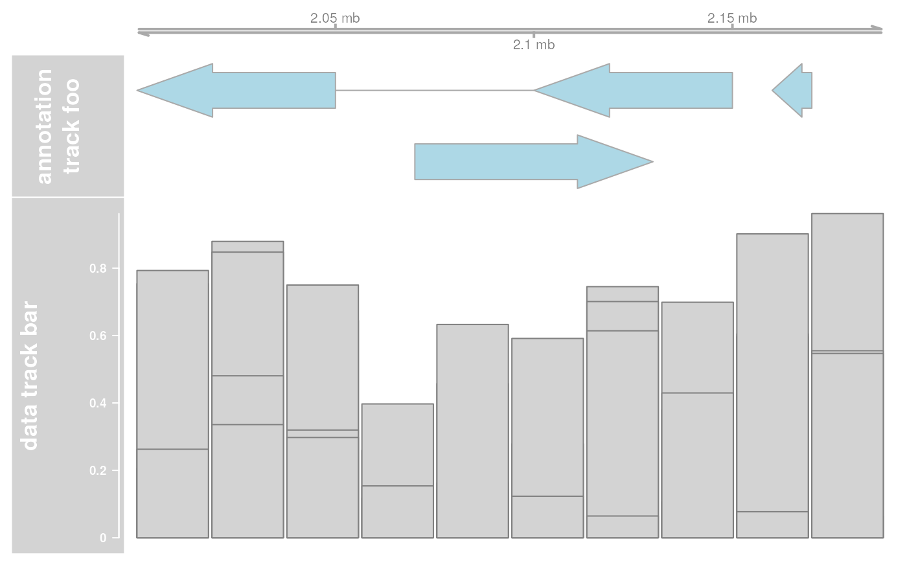

plotTracks is the main interface when plotting single track objects,
or lists of tracks linked together across the same genomic coordinates.
Essentially, the resulting plots are very similar to the graphical output of
the UCSC Genome Browser, except for all of the interactivity.
plotTracks(
trackList,
from = NULL,
to = NULL,
...,
sizes = NULL,
panel.only = FALSE,
extend.right = 0,
extend.left = 0,
title.width = NULL,
add = FALSE,
main,
cex.main = 2,
fontface.main = 2,
col.main = "black",
margin = 6,
chromosome = NULL,
innerMargin = 3
)Arguments
- trackList
A list of Gviz track objects, all inheriting from class
GdObject. The tracks will all be drawn to the same genomic coordinates, either as defined by thefromandtoarguments if supplied, or by the maximum range across all individual items in the list.- from, to
Character scalar, giving the range of genomic coordinates to draw the tracks in. Note that
tocannot be larger thanfrom. IfNULL, the plotting ranges are derived from the individual tracks. Seeextend.leftandextend.rightbelow for the definition of the final plotting ranges.- ...
Additional arguments which are all interpreted as display parameters to tweak the appearance of the plot. These parameters are global, meaning that they will be used for all tracks in the list where they actually make sense, and they override the track-internal settings. See settings for details on display parameters.
- sizes
A numeric vector of relative vertical sizes for the individual tracks of length equal to the number of tracks in
trackList, orNULLto auto-detect the most appropriate vertical size proportions.- panel.only
Logical flag, causing the tracks to be plotted as lattice-like panel functions without resetting the plotting canvas and omitting the title pane. This allows to embed tracks into a trellis layout. Usually the function is called for a single track only when
panel.only==TRUE.- extend.right, extend.left
Numeric scalar, extend the plotting range to the right or to the left by a fixed number of bases. The final plotting range is defined as
from-extend.lefttoto+extend.right.- title.width
A expansion factor for the width of the title panels. This can be used to make more space, e.g. to accommodate for more detailed data axes. The default is to use as much space as needed to fit all the annotation text.
- add
Logical flag, add the plot to an existing plotting canvas without re-initialising.
- main
Character scalar, the plots main header.
- cex.main, fontface.main, col.main
The fontface, color and expansion factor settings for the main header.
- margin
The margin width to add to the plot in pixels.
- chromosome
Set the chromosome for all the tracks in the track list.
- innerMargin
The inner margin width to add to the plot in pixels.
Value
A list of Gviz tracks, each one augmented by the computed image map
coordinates in the imageMap slot, along with the additional ImageMapobject titles containing information about the title panels.
Details
Gviz tracks are plotted in a vertically stacked layout. Each track panel is split up into a title section containing the track name, as well as an optional axis for tracks containing numeric data, and a data section showing the actual data along genomic coordinates. In that sense, the output is very similar to the UCSC Genome Browser.
The layout of the individual tracks is highly customizable though so called
"display parameters". See settings for details.
While plotting a track, the software automatically computes HTML image map
coordinates based on the current graphics device. These coordinates as well
as the associated annotation information can later be used to embed images
of the plots in semi-interactive HTML pages. See
ImageMap for details.
See also
Examples
## Create some tracks to plot
st <- c(2000000, 2070000, 2100000, 2160000)
ed <- c(2050000, 2130000, 2150000, 2170000)
str <- c("-", "+", "-", "-")
gr <- c("Group1", "Group2", "Group1", "Group3")
annTrack <- AnnotationTrack(
start = st, end = ed, strand = str, chromosome = 7,
genome = "hg19", feature = "test", group = gr,
id = paste("annTrack item", 1:4),
name = "annotation track foo",
stacking = "squish"
)
ax <- GenomeAxisTrack()
dt <- DataTrack(
start = seq(min(st), max(ed), len = 10), width = 18000,
data = matrix(runif(40), nrow = 4), genome = "hg19", chromosome = 7,
type = "histogram", name = "data track bar"
)
# \dontshow{
## For some annoying reason the postscript device does not know about
## the sans font
if (!interactive()) {
font <- ps.options()$family
displayPars(annTrack) <- list(fontfamily = font, fontfamily.title = font)
displayPars(ax) <- list(fontfamily = font, fontfamily.title = font)
displayPars(dt) <- list(fontfamily = font, fontfamily.title = font)
}
# }
## Now plot the tracks
res <- plotTracks(list(ax, annTrack, dt))

## Plot only a subrange
res <- plotTracks(list(ax, annTrack, dt), from = 2080000, to = 2156000)
 ## Extend plotting ranges
res <- plotTracks(list(ax, annTrack, dt), extend.left = 200000, extend.right = 200000)
## Extend plotting ranges
res <- plotTracks(list(ax, annTrack, dt), extend.left = 200000, extend.right = 200000)
 ## Add a header
res <- plotTracks(list(ax, annTrack, dt),
main = "A GenomGraphs plot",
col.main = "darkgray"
)
## Add a header
res <- plotTracks(list(ax, annTrack, dt),
main = "A GenomGraphs plot",
col.main = "darkgray"
)
 ## Change vertical size and title width
res <- plotTracks(list(ax, annTrack, dt), sizes = c(1, 1, 5))
## Change vertical size and title width
res <- plotTracks(list(ax, annTrack, dt), sizes = c(1, 1, 5))
 names(annTrack) <- "foo"
res <- plotTracks(list(ax, annTrack), title.width = 0.6)
## Adding and lattice like plots
library(grid)
grid.newpage()
pushViewport(viewport(height = 0.5, y = 1, just = "top"))
grid.rect()
plotTracks(annTrack, add = TRUE)
popViewport(1)
pushViewport(viewport(height = 0.5, y = 0, just = "bottom"))
grid.rect()
plotTracks(dt, add = TRUE)
popViewport(1)
names(annTrack) <- "foo"
res <- plotTracks(list(ax, annTrack), title.width = 0.6)
## Adding and lattice like plots
library(grid)
grid.newpage()
pushViewport(viewport(height = 0.5, y = 1, just = "top"))
grid.rect()
plotTracks(annTrack, add = TRUE)
popViewport(1)
pushViewport(viewport(height = 0.5, y = 0, just = "bottom"))
grid.rect()
plotTracks(dt, add = TRUE)
popViewport(1)
 if (FALSE) {
library(lattice)
myPanel <- function(x, ...) {
plotTracks(annTrack,
panel.only = TRUE,
from = min(x), to = max(x), shape = "box"
)
}
a <- seq(1900000, 2250000, len = 40)
xyplot(b ~ a | c, data.frame(a = a, b = 1, c = cut(a, 4)),
panel = myPanel,
scales = list(x = "free")
)
}
if (FALSE) {
library(lattice)
myPanel <- function(x, ...) {
plotTracks(annTrack,
panel.only = TRUE,
from = min(x), to = max(x), shape = "box"
)
}
a <- seq(1900000, 2250000, len = 40)
xyplot(b ~ a | c, data.frame(a = a, b = 1, c = cut(a, 4)),
panel = myPanel,
scales = list(x = "free")
)
}